Setup: a disposable repository shop with a nested src/billing/invoices/render/mod.rs holding two render_total declarations (one inside mod legacy, one only mentioned in a comment), a 3,000-line src/long.rs, an ignored scratch/ with notes.md and explore.html, and an ignored target/ artifact containing render_total. The Task a29f32 ran the qa Graph to its demo step. Its checkout carried uncommitted edits to main.rs (+2 −1) and config.rs (−1).
desktop do files-find -p files, then type billrend. The picker lists only src/billing/invoices/render/mod.rs, and with the pane zoomed past 620 pt it previews the file beside the list. Works.
Broken, then fixed: the preview, and the reader generally, wrapped code lines at about 200 pt whatever the pane's width. A wrapped declaration read as two lines beside one number. Pinning each row's width to its content fixed the wrap. The first attempt pinned only the text, which pushed long lines over their numbers, so the fix pins the whole row (TaskCodeReader.swift).
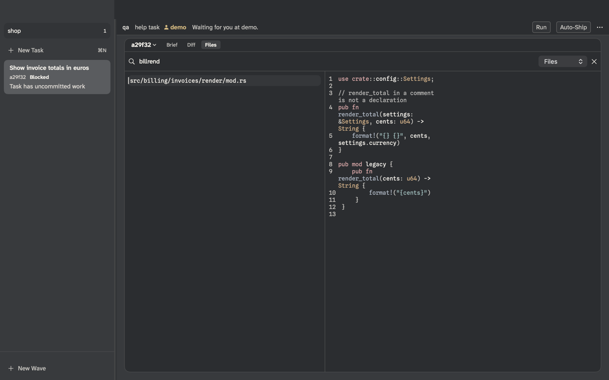
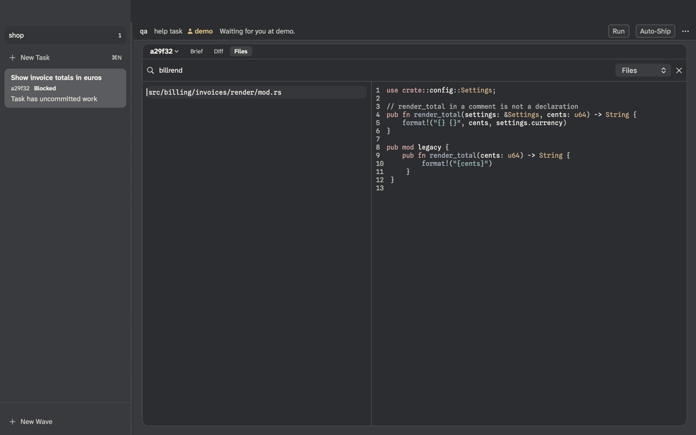
Return opens the file in Read. The rail docks (620 pt+), the breadcrumb shows every folder, and the Checkout tree reveals the file through its unopened ancestors.
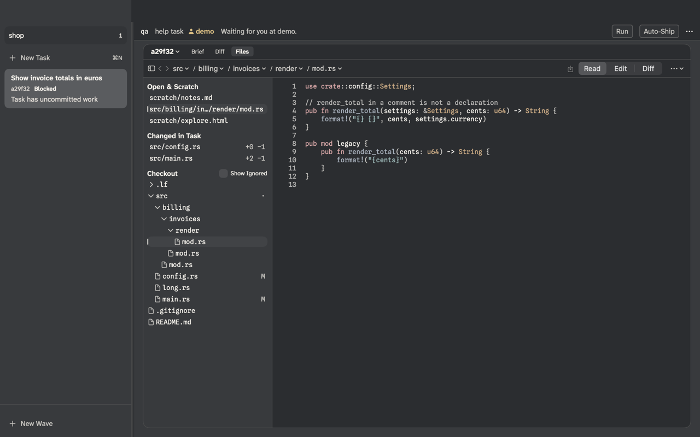
lf desktop files src/main.rs:5 opens Read with line 5 highlighted, green change marks on 7–8 and › main in the breadcrumb. files-outline lists render_total, legacy, legacy.render_total and skips the comment. files-back and files-forward move between main.rs and render/mod.rs. Works.
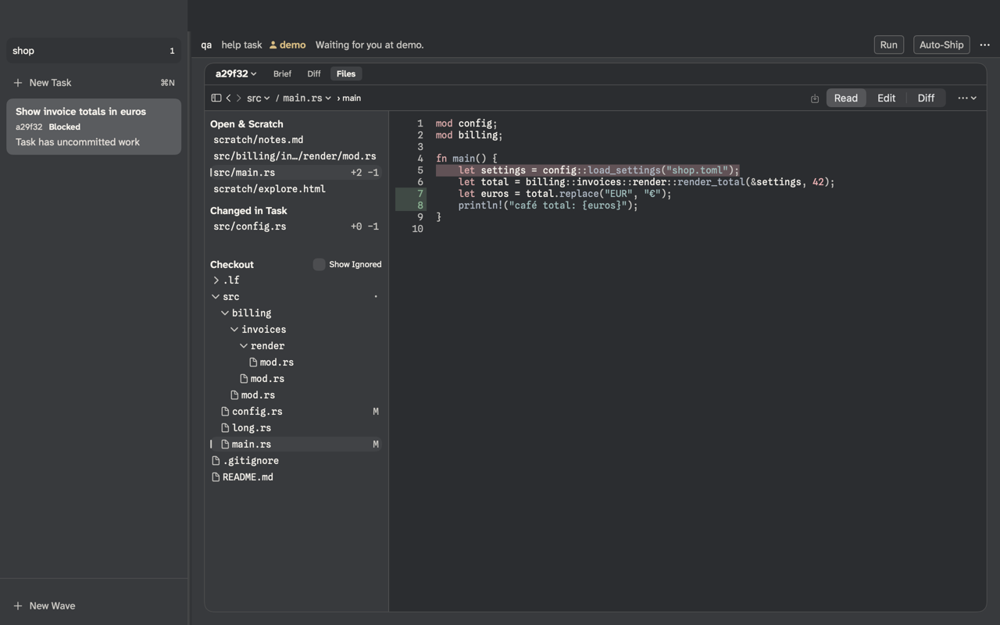
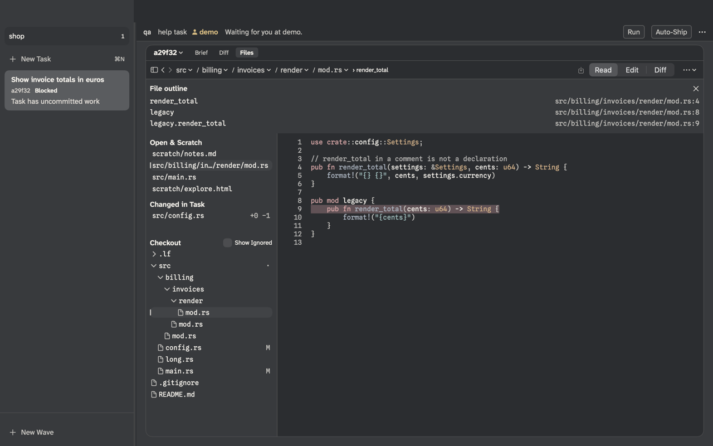
⌘F with total counts “2 of 4” and Return steps. Only the current match is tinted, which is how FileFind.highlight is written. ⇧⌘F carries the query to checkout Grep. It finds the ignored scratch page and skips target/. Arrowing previews each hit with its exact bytes marked, Return opens render/mod.rs:9, and Back returns to main.rs. Works.
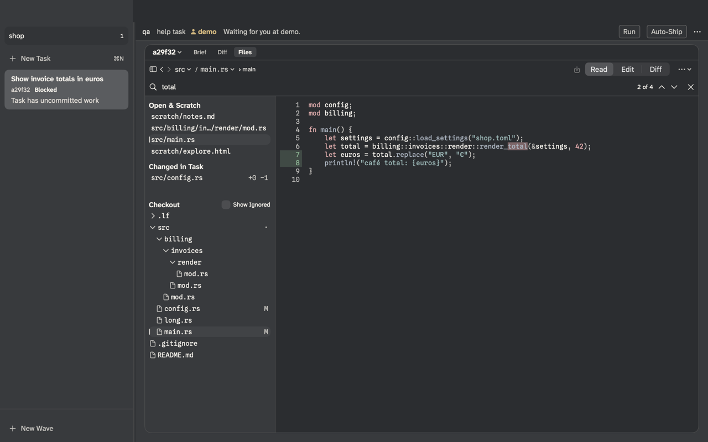
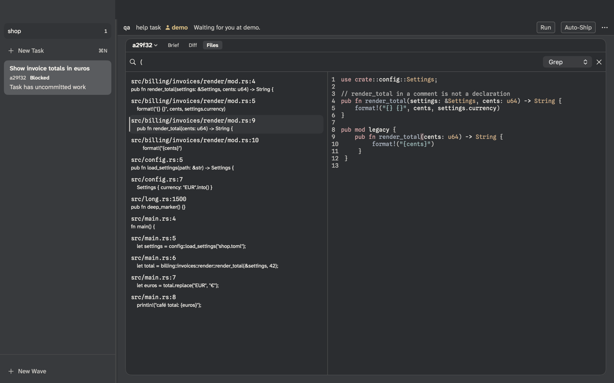
The CLI agrees:
$ lf task find a29f32 billrend
src/billing/invoices/render/mod.rs
$ lf task grep a29f32 render_total --whole-word
src/billing/invoices/render/mod.rs:3:// render_total in a comment is not a declaration
src/billing/invoices/render/mod.rs:4:pub fn render_total(settings: &Settings, cents: u64) -> String {
src/billing/invoices/render/mod.rs:9: pub fn render_total(cents: u64) -> String {
src/main.rs:6: let total = billing::invoices::render::render_total(&settings, 42);
$ lf task symbols a29f32 render_total
src/billing/invoices/render/mod.rs:4:fn render_total
src/billing/invoices/render/mod.rs:9:fn render_total (legacy)
$ lf task grep a29f32 café --json # start 14, end 19: UTF-8 bytes around "café"
Edit and Diff are reachable from the header buttons. Diff shows the file against the Task base with the step control, the “1 old line · Show” fold and the three layouts. Works.
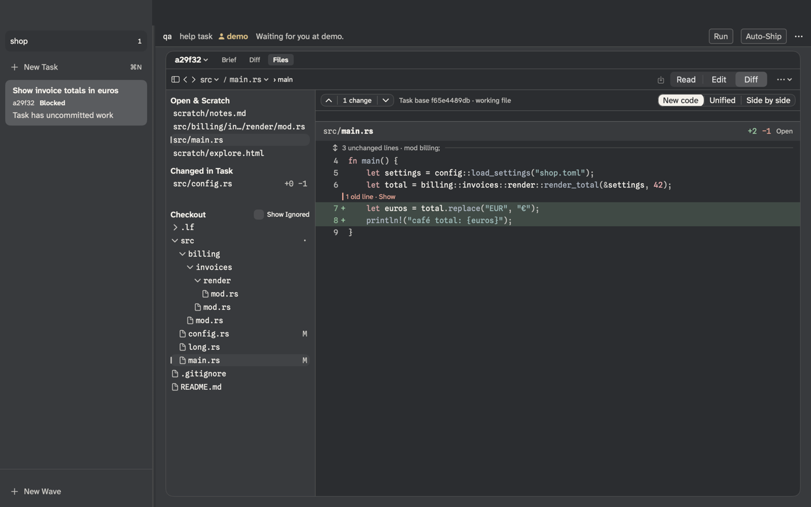
main.rs.With main.rs in Edit, two rewrites of scratch/explore.html left the editor in place and showed a quiet “Updated scratch/explore.html · Open”. lf desktop files scratch/notes.md during Edit showed “Presented scratch/notes.md · Open” and did not switch files. In Read, presenting explore.html opened the rendered page at once.
Broken, then fixed: the rewrites used sed -i, which saves atomically: it writes scratch/.!43245!explore.html and renames it over the page. Each temporary file became a badged entry in Open & Scratch that stayed after the file was gone, and the update bar once offered “Updated scratch/.!43245!explore.html”. Updates now offer only pages the refreshed scratch inventory still holds (TaskFilesStore.applyWrites). The existing peer scratch-write test now sends the temporary sibling, and it fails without the fix.
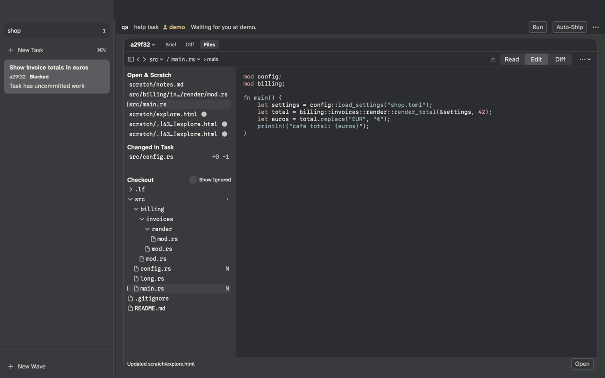
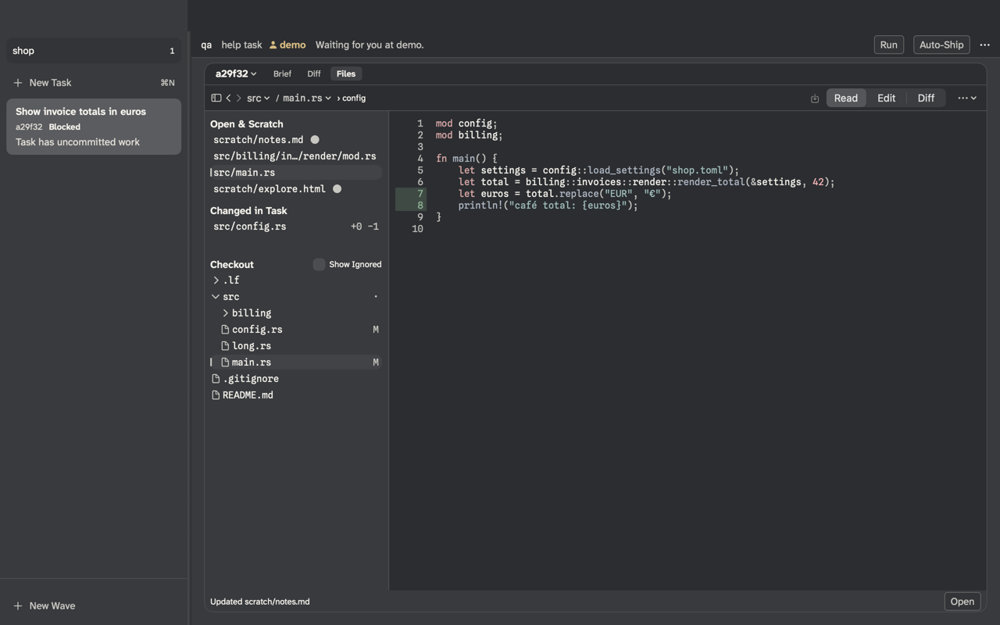
sed -i burst badges only notes.md and explore.html.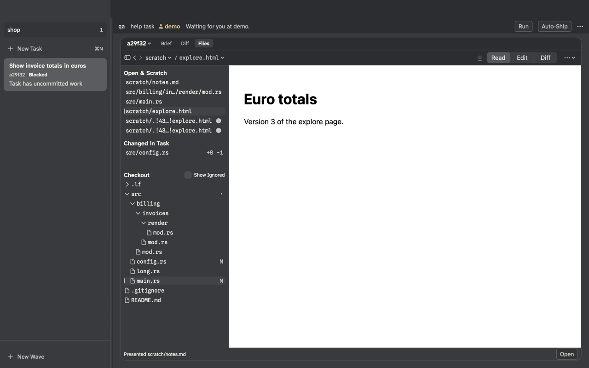
Settled reload: scrolled to 600, then two writes 0.3 s apart. Read through WebKit 0.4 s after the burst and again 3 s later:
Euro totals Version 7 of the explore page. Bottom of the page. | scrollY=600 (during the burst) Euro totals Version 9 of the explore page. Bottom of the page. | scrollY=600 (settled: one reload, scroll kept)
At about 380 pt the rail becomes a drawer, and Read/Edit/Diff fold into the header menu. At about 240 pt the breadcrumb keeps only the filename. The sidebar button opens the drawer over the reader.
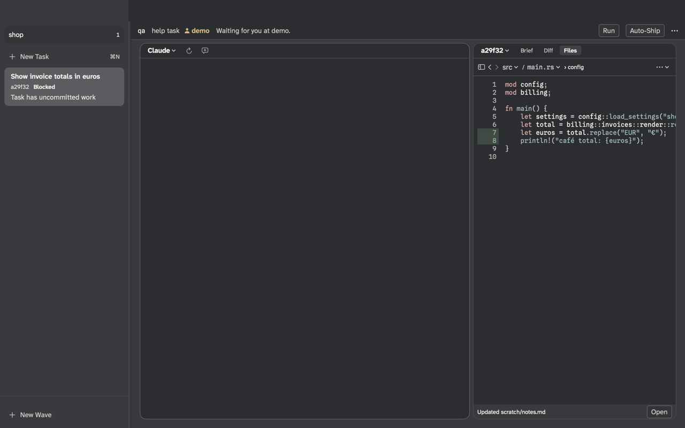
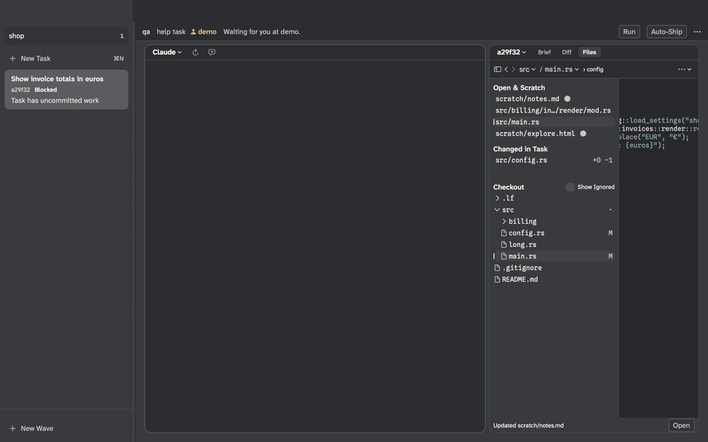
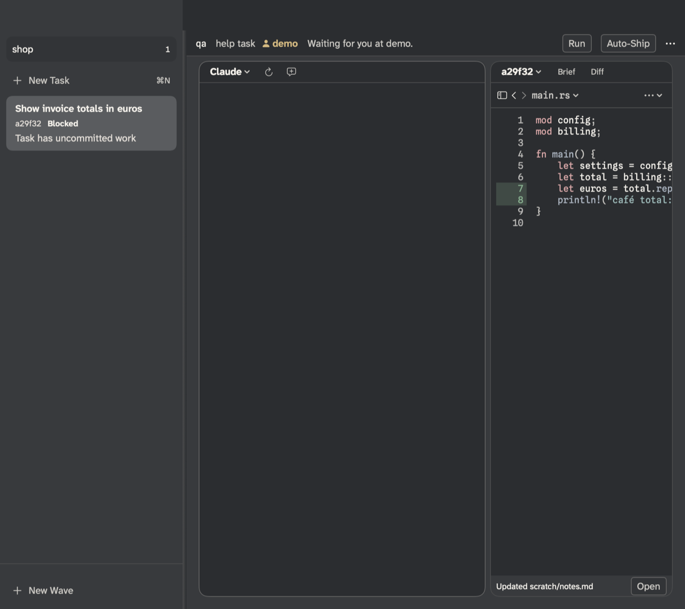
$ lf desktop files ../../../../etc/hosts → Error: Files needs a path inside the checkout. (2) $ lf desktop files src/main.rs:5-2 → Error: Expected LINE or LINE-END after the path (2) $ lf desktop files nosuch/path.rs → files (0), reader shows "File no longer exists" $ lf desktop files src/main.rs:999 → files (0)
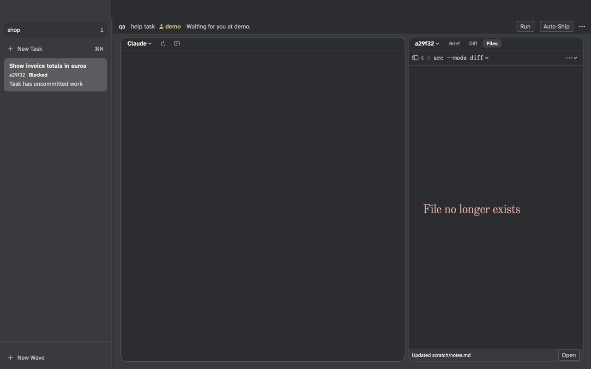
TaskFileState.missing text and EmptyState style).After quitting and relaunching, the Task reopened on main.rs in Read.
Finding a nested file and previewing it. Opening it in Read with change marks, enclosing symbol and outline. Presenting a line range from the CLI. Back and forward. Find promoted to Grep, with exact hit previews. Per-file Edit and Diff. Calm scratch updates and presentation offers during Edit. Settled HTML reloads that keep their scroll. The responsive rail and drawer. Matching lf task find|grep|symbols output.
| Jump to definition by click | Word taps (gd, ⌘-click) are SwiftUI tap gestures, and none fired from the hook in a window that isn't key. Neither a pre-queued mouse-up nor a down-then-up 80 ms later worked. The definition read itself works (lf task symbols, the outline), and headless tests cover the model. A mounted click needs an unlocked display. |
| Line comments into the conversation | Gutter clicks are tap gestures too, so the shared comment batch and ⌘↩ insertion went unexercised here. |
| Rail rows, outline rows, the update bar's Open | Same limit. Presentation and history were used instead. |
| Step Diff keeping whole-Task counts | The disposable Task had no committed steps. Headless tests cover it. |
| Peer Machine checkout | Not set up in this run. The plan's Swift and Rust journeys cover it. |
Clicking a word may never reach gd | The hook's click on a code line made the line's selectable text view first responder, and the following g d keys went to it, not to the reader's onKeyPress. The hook can't settle whether a real click behaves the same. Check on an unlocked display before relying on gd after a click. |
| Session zoom hides presentations | After a relaunch the window restored with the session pane zoomed. lf desktop files … answered files (exit 0) while nothing visible changed. |
| Pane strip at narrow widths | At about 240 pt the “Files” tab is clipped away while Files is showing. |
| Nonexistent paths | lf desktop files nosuch/path.rs succeeds, and the reader says the file “no longer exists” in the large serif empty-state title. |
| Grep rows for two hits on one line | The two src/main.rs:6 rows look identical; the row excerpt doesn't mark the hit. Long single-line hits (the HTML page) sit off to the right of the preview now that code doesn't wrap. |
| Changed in Task omits open files | Once main.rs was open, it moved from Changed in Task to Open & Scratch (with its counts), leaving Changed listing only config.rs. |
| Stale presentation bar | “Presented scratch/notes.md · Open” stayed after leaving Edit and opening another page. |
scripts/test_desktop.sh --filter 'ignoredScratchWritesOfferThePageWithoutOpeningItOrReadingAComparison|codeOpensInReadAndKeepsItsDraftAndEditorAcrossFiles' → 2 passed; with the store fix reverted, the scratch test fails.